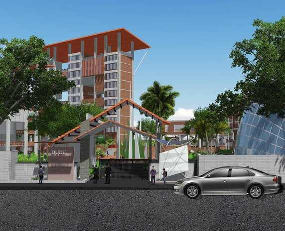

Hence September 1, 2003 became a historic day when the institute became an autonomous statutory organization of Government of the People’s Republic of Bangladesh under the Dhaka University of Engineering and Technology, Gazipur Act 2003.

Details about another event that happened in 1988. This could be about the establishment of the institute or another significant milestone.